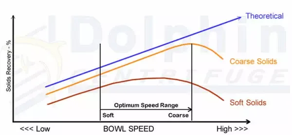
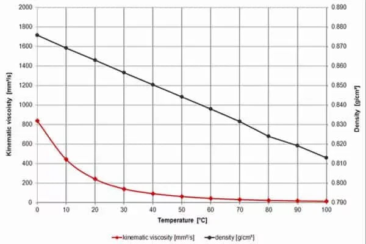
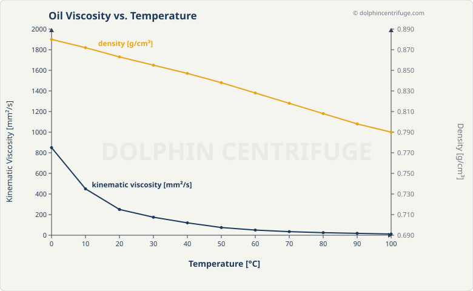

ORIGINAL

alt: "Decanter centrifuge performance optimization curves — solids recovery vs bowl speed"
REDRAW (V2 Clean)

Same alt text preserved. SVG — all text searchable by Google.
How this works: Each graph shows ORIGINAL (left, red border) vs REDRAW (right, green border). Review each pair. Tell Claude:
- "Approve" to implement on the page
- "Fix [specific issue]" to adjust
- "Skip" to come back later
- "Looks good, go autonomous" when you trust the quality


